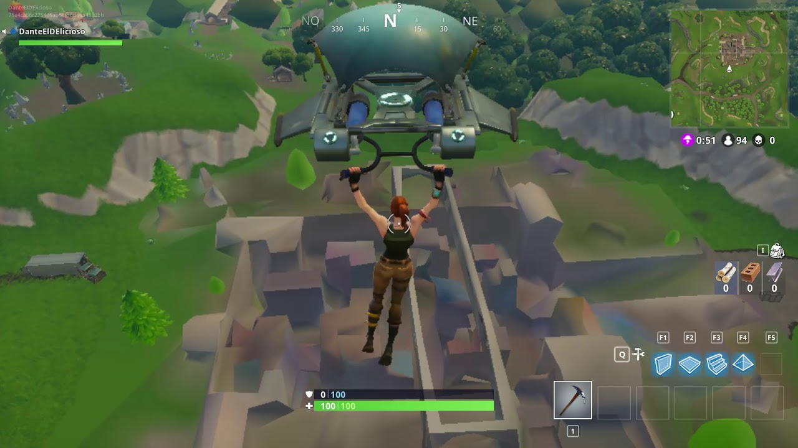
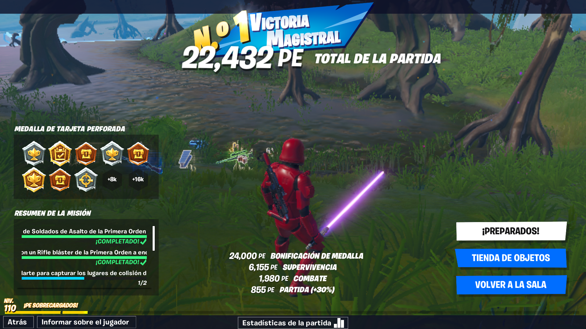

Mis inicios con Fortnite
Okay comencemos con una nueva y aburrida historia. En realidad la fecha en que comence a jugar o que cree mi cuenta de este maravilloso juego (antes de infestarse de jugadores pro) no esta muy clara, ya que el correo de creacion de mi cuenta de Epic Games fue el 2 de agosto del 2016, pero no recuerdo que en esa fecha ya pudiera jugarlo, entonces buscando un poco mas en mi bandeja de correos pude encontrar el segundo correo por parte de Epic, siendo el 27 de febrero de 2018, una fecha un poco mas aceptable a mis inicios.
Buen, dejando la fecha a un lado, todo comenzo desde que tuve una mejor computadora a la que tenia antes, aunque seguia siendo una laptop, su hardware era mucho mejor. Procesador Intel Core i3 de quinta generacion (si no mal recuerdo), 4 Gb de RAM y una tarjeta grafica integrada Intel de 3 Gb (creo). Claro, con estas especificaciones el juego no podria "correr" en las mejores graficas, asi que toda la configuracion estaba en lo mas minimo, es decir, todo era de plastilina y en ocaciones los graficos podian fallar.

Img: https://youtu.be/XFYAZ1qSyow
Pero bueno, cumplia su cometido, podia jugar bien, terminaba mis partidas, tenia mis momentos pro. Claro, tenia un poco de lag ocacionado por el hardware pero nada que no pudiera soportarse.
Despues de un mes jugando yo seguia siendo muy noob para la mecanica del juego, ya que no solo implicaba disparar, si no que tambien se incluyo la idea de construir en este juego, entonces al encontrar a un enemigo hay dos cosas que hacer, comenzar una balacera o comenzar la obra de un edificio. Claro, yo con mis habilidades de construccion que Minecraft me dejo, solo podia hacer una pared y una rampa... mientras que el enemigo tenia construido todo un Taj Mahal, una torre de Shanghái, la Torre de Pisa, y cualquier otra referencia a edificios grandes.

Img: https://www.reddit.com/r/FortniteCompetitive/comments/9fwl4k/made_a_gif_of_my_new_90_degree_turn_technique_i/?utm_source=share&utm_medium=web2x
Y entonces comenzo mi vicio... jugar diario, perder y perder, intentar mejorar mi habilidad construyendo, pero nunca lo logre jaja. Talves era cuestion de jugar SIEMPRE, 24/7, pero me era imposible y me resigne a seguir con mi vida de noob.
Tambien a este juego se unieron amigos, entonces el vicio crecio mas, jugabamos cada noche, tarde o madrugada que pudieramos. Conoci nuevos amigos y momentos nuevos fueron naciendo en estas reuniones online, bromas, chismes e historias comenzaron... Pero era solo por el periodo de vacaciones, ya que al regresar a clases todo esto desaparecia, cada uno se encargaba de sus tareas y trabajos y era raro el fin de semana o dia en el que todos nos juntaramos para jugar.
Ganamos partidas, dimos batallas, descubrimos secretos, todo fue un buen momento, hasta que llego la gente PRO, aquellos que se encargaban de hacer Fortnite un juego de quien era mejor construyendo en lugar de un juego para ver quien era mejor disparando, se convirtio en Minecraft de disparos. Pero aun asi ahi seguiamos, evento tras evento, temporada tras temporada, y aunque el grupo se iba disminuyendo, siempre tenia con quien jugar.
En fin, las historias seran para otra ocasion, por ahora terminare diciendo que al dia de hoy, mis habilidades han mejorado, tanto de construccion como de disparo, tambien mejore el hardware donde juego y lo mas triste... ya no tengo con quien jugar, mis amigos ahora odian el juego y tengo que jugar solo, pero bueno...
...al menos ya he ganado partidas solo :D
